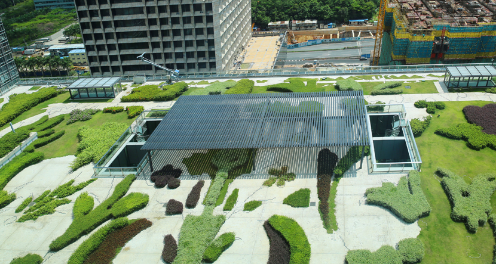
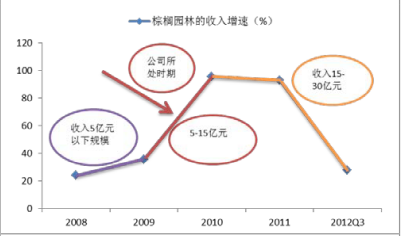

铁汉柔情
300197.SZ
金顾中心：方蓮

公司概况
| 项目 | 说明 |
|---|---|
| 公司名称 | 深圳市铁汉生态环境股份有限公司 |
| 成立时间 | 2001-08-07 |
| 注册资本 | 505,289,404 |
| 公司类型 | 民营企业 |
| 住所 | 广东省深圳市福田区红荔西路8133号农科商务办公楼5,6,7,8楼 |
| 法定代表人 | 刘水 |
| 工商登记号 | 440301102998582 |
| 经营范围 | 水土保持，生态修复，园林绿化工程施工和园林养护，生态环保产品的技术开发(不含限制项目)；风景园林工程设计专项甲级、造林工程规划设计、造林工程施工、市政公用工程施工总承包、土石方工程专业承包、园林古建筑工程专业承包(以上各项按资质证书经营)；苗木的生产和经营，销售生物有机肥，农产品的生产和经营，进出口业务(按深贸管准证字第2003-4017 号证书办)，清洁服务(不含限制项目)。 |
| 概念板块 | 装饰园林;超涨 |
股本结构： 总市值：12,116,839,908
| 项目 | 说明 | 项目 | 说明 |
|---|---|---|---|
| 总股本 | 505,289,404 | 自由流通股本 | 192,580,760 |
| 流通A股 | 292,936,793 | 流通A股占总比例 | 57.97% |
| 限售A股 | 212,352,611 | 限售A股占总比例 | 42.05% |
| B股合计 | 0 | H股合计 | 0 |
| 流通股合计占总比例 | 57.9741 | 限售股合计占总比例 | 42.0259 |
| 流通股合计 | 292,936,793 | 流通股合计占总比例 | 57.9741 |
| 限售股合计 | 212,352,611 | 限售股合计占总比例 | 42.0259 |
| 限售股份（国家持股） | 0 | 限售股份（国有法人） | 0 |
| 限售股份（机构配售） | 0 | 限售股份（境内自然人） | 212,490,373 |
组织架构图
股权结构

股东情况
现任董事长刘水先生为公司的实际控制人
- 刘水先生毕业于北京大学自然地理学专业
- 2001年与张衡、陈阳春共同创建深圳市铁汉园林绿化有限公司
- 现任中国水土保持学会水土保持生态修复专业委员会常务委员
- 2011年被选为广东省企业联合会、省企业家协会副会长
- 同年被评为首届“深圳百名行业领军人物”之一
资本市场


行业 ：竞争与机会
环保行业
指在国民经济结构中，以防治环境污染、改善生态环境、保护自然资源为目的而进行的技术产品开发、资源利用、工程承包、商业流通、信息服务等活动的总称
- 全球市场，共同面对
- 中国问题，亟待解决
- 发展迅速：1992年2500亿美元增至2012年6000亿美元，年均增长率8%
- 朝阳产业：美国、日本和欧盟的环保产业成为全球环保市场的主要力量
行业特点
中国式环保
政府给力，政策发力
- 政府资金投入是环境监测仪器需求增长的主要驱动因素: 最近几年环保部财政支出中环保支出的力度加大
- 提高排污费、环境税政策推进,使环保投入有望加大:
- 一体化生态环境治理模式转变政府职能、促进监测设备企业发展: 新余市政府与永清环保合作模式
- PPP模式加速下,未来的一体化生态服务商: 一体化生态环境治理模式是环保行业未来发展方向
一体式生态治理模式
生态环境治理是指利用物理、化学与生物工程等方法对人类生存的环境进行修复建设,以改善人类生活环境,实现可持续发展,主要包括水体、大气、陆地领域等生态环境建设。
施工对象、施工技术及施工目的不同
一体式生态治理系统

生态修复和园林绿化主要特点对比
| 项目 | 生态修复 | 园林绿化 |
|---|---|---|
| 工程目的 | 恢复生态为主、美化景观为辅 | 美化景观为主 |
| 技术要求 | 施工工艺、基材 | 主要为艺术美学 |
| 采用苗木 | 生态苗木 | 景观苗木 |
| 后期养护 | 基本不需要 | 较好的后期养护 |
| 工程毛利 | 较高 | 较低 |
从行业发展来看
- 早期的生态环境建设主要是市政园林建设，地产景观建设随城市化取得迅速发展
- 最近几年以来,有关部门开始重点投入矿山生态修复和沙漠化治理等方面的国土整治工作
- 其中的生态修复已成为一个新兴的生态环境建设领域
生态修复：方兴未艾
指采用物理和生物工程等综合技术方法,对因人类活动造成的工程创伤(如道路边坡、矿山、采石场、水利堤坝等)及自然灾害(如地震、土地沙化)等因素导致受损的地表植被进行修复重建。
发展时间短，市场规模大，竞争程度不高
- 公路边坡修复业务：公路与铁路
- 矿山生态修复领域：
- 水利建设生态修复市场
发展时间短，市场规模大，竞争程度不高
- 起步阶段：数量少、规模小，简单业务
- 在技术要求较高的生态修复工程上涉足公司很少
- 第一梯队的企业主要集中在深圳、北京等地区
公路边坡修复
【公路 + 铁路】边坡修复
- 新/改建公路、铁路会对周边生态环境产生破坏
- 公路、铁路的建设将直接推动道路边坡修复行业的发展
- 道路建设一般由政府主导,道路边坡修复落实效果良好
- 政府对道路边坡修复的监督、推动力度加大
- 这亦利好道路边坡修复行业的发展
- 预测：到2020年公路绿化建设需要投资1036.5亿元
每年新增投资在115亿元左右
公路边坡修复
公路里程和高速公路里程分别超423和9万公里
公路建设绿化投资额绝对值和占比双双快速增长
江西鹰瑞高速绿化景观工程
施工前效果

施工后效果
矿山生态修复
- 矿山在开采过程中对当地植被及生态环境造成巨大破坏
因而,事后应该对被破坏生态环境进行修复。 - 自上世纪90年代起,重建矿区生态环境
- 2006.02.10:建立矿山环境治理和生态恢复责任机制
- 2009.05.01:《矿山地质环境保护规定》
- 2010.09:积极探索矿产资源生态环境保护新道路
- 《全国矿产资源规划（2008-2015年）》: 12%上升至35%
- 英美等国家更超过80%
矿山生态修复
我国矿山复垦和生态修复率和发达国家对比
我国矿山复垦和生态修复投资额
- 2010-2015年矿山修复市场规模可达1433.78亿元
- 年均投资额为286.76亿元左右
水利工程修复
- 2011年中央一号文件提出,力争今后 10 年全社会水利年平均投入比2010年高出一倍
- 即每年投入约 4000 亿元
- 国内水利工程生态修复市场发展将提速
生态修复市场规模预计(亿元)
园林绿化：增长稳定
指充分利用城市自然条件、地貌特点和基础物种对城市中需绿色植物覆盖、美化的区域进行绿化建设,以营造一个舒适、和谐的城市人居环境。
市场运作模式成熟，伴随城市化演进
- 市政园林建设：政府加大投资力度
- 地产景观建设：受地产行业周期性影响
- 其他园林绿化工程：生态园林、农业园林
市政园林
主要指的是由政府投资建设的城市公共、小区休闲基地、生态湿地等园林工程或事业单位附近的园林工程项目
- 我国城市绿地面积和城市公园绿地面积不断增加
- 十八大会议美丽中国的提出和加快推进新型城镇化建设
- 城市环境绿化建设投资由429.01亿元增长到1546.25亿元
- 同比增长3.6倍，年均复合增长率达到37.79%
市政园林
我国城市绿地面积及公园绿地面积
我国城市环境园林绿化投资总额
地产园林
地产园林主要是由房地产公司投资建设的高档小区、别墅、酒店、度假村等周边园林绿化假设项目
- 国内城市普遍要求新建居住区绿化面积不低于30%
- 地产园林成为园林绿化行业一个新的增长极
- “十二五”期间市场规模达到 1.3-1.5 万亿元
- 每年新增的地产园林景观绿化投资额就达到48.36亿元
地产园林
我国历年房屋竣工面积及同比增速
我国历年房地产开发投资建设额及同比增速
园林绿化市场规模情况(亿元)
行业进入壁垒
新兴的行业,具有巨大的市场潜力,但同时,其亦具有一定的行业壁垒,维持行业较高盈利水平:
- 行业由于其特殊要求性,技术能力是其主要进入障碍
工程复杂，技术综合：土壤、植物、维护 - 较高的资金需求是行业的另一主要进入障碍
典型的资金密集型行业，需要占用自身大量资金 - 项目经验形成的在位优势亦是该行业的进入障碍
具备丰富的跨区域施工经验，取得订单的成功率，形成在位优势
园林困境:回款难，营运资金占用
园林行业近年来净利润增速趋缓下行
园林行业经营现金流净额为负并未改善

- 园林公司的核心问题是市政园林的回款期长
- 造成账款回收不力，经营现金流净额常年为负
- 订单不代表营收，存货转营收是关键
- 现金为王
PPP：新模式，新动力
PPP模式回款有保障，预计园林现金流将逐步好转
- 园林公司的核心问题是市政园林的回款期长
- PPP是市政园林模式的一种巨大进步
- 园林公司PPP储备订单充足，现金流有望改善

PPP 项目巡航
上海农业园区窥测新型城镇化、现代农业的广阔前景
- 13个园区规划总面积337.98平方公里，引进投资总额121.38亿元
- 新型城镇化涉及农业产业化及地产开发
- 农业产业化包括种植、展销、休闲观光等，收入来源十分多元化
- 现代农业园区建成后重视开展生态旅游业务，带动了当地的旅游经济
棕榈园林：借浔龙河项目，发力生态城镇运营
目延伸产业，变革商业模式
- 棕榈园林旨在做好生态城镇平台，频频设立或参股公司
- 涉及产业投资、城镇化开发、文化旅游、职业教育与科技开发等
- 在规划端口将引进整合“中欧设计平台”
- 在产业导入端口将引进北京电影学院
- 通过该PPP项目向生态城镇运营发力
棕榈园林：借浔龙河项目，发力生态城镇运营
铁汉生态：借现代农业成果展示区项目，试水PPP
- 受益于PPP模式，国有独资公司长沙瑞农投资出资不低于30%
- 避免垫付大量资金而造成公司现金流紧张
- 提升资金杠杆效应
- 有助于公司提升回款速度，保证现金流充足
- 多种融资方案
铁汉生态：借现代农业成果展示区项目，试水PPP
长沙现代农业成果展示区效果图
现代农业成果展示区项目布局
蒙草抗旱：结合PPP项目寻找新赢利点
- 旱以草原生态修复为核心领域
- 树立节约型生态建设者的良好品牌形象
- 为当地唯一专注于生态修复的上市公司
- 在该省的PPP项目承揽上有很强竞争力
- 通过并购方式于去年收购了浙江普天园林公司
- 高端地产园林业务中拥有较好口碑
- 在未来有望结合PPP这种商业模式，打破现金流差的束缚，成为新的赢利点
上市园林公司的生态修复业务布局
经营分析
公司所能享受的行业空间巨大，成长空间充分打开
- 公司主要在生态修复、市政园林绿化、地产景观园林绿化等领域内从事景观生态环境建设工程施工业务
- 生态修复的工程业务主要集中在公路、矿山等领域
- 园林绿化业务主要集中在市政园林和地产园林业务
“园林绿化+生态修复”
双主业协同发展模式
- 国内少数有能力同时涉足生态修复及园林绿化领域
- 布局最为均衡
- 双主业均有领先优势
- 研发带动技术进步，提升核心竞争力
- 为国家级高新技术企业，产、学、研、用研发平台建设取得新突破
生态修复：拥有核心的施工技术及工艺
- 公司已熟练掌握多种生态修复施工技术
- 拥有核心的施工技术及工艺
- 核心的基质配臵技术
- 植物选育及配臵技术
- 施工技术
- 制定适宜的基质配置方案
- 在边坡形成稳定生态系统的效果
- 已处于成熟阶段
生态修复：拥有一系列生态苗木研发、培育技术
- 水土流失、沙化和盐化
- 自然条件比较恶劣
- 需具有抗干旱、耐贫瘠、耐盐碱等特性
- 公司与植物研究院所合作
- 进行生态苗木研究
- 已拥有一系列生态苗木研发、培育技术
生态修复：跨地域复杂环境的施工经验
- 幅员辽阔，区域差别巨大
- 生态系统复杂多变
- 对企业跨地域的施工能力要求高
- 国内少数几家具有复杂环境下跨区域生态修复工程施工经验的企业之一
- “深圳市特色园林企业（生态修复）第一名”
生态修复：化腐朽为神奇
广州南沙采石场修复前
广州南沙采石场修复后
园林绿化：具有显著优势
- 施工经验
- 技术竞争优势
- 资金实力
- 深圳市园林绿化龙头企业
- 与植物研究所合作
- IPO + 定增
园林绿化：打造诗意栖居

行业竞争
大行业、小公司，公司未来的高速成长可期
- 目前行业集中度仍然较低，初具规模的公司将有望占据先发优势
- 公司目前的收入和净利规模虽然与排名靠前的上市公司如东方园林、棕榈园林、普邦园林等相比，仍然有一定的差距
- 但在园林绿化行业排名中已经相对靠前，初步具备规模优势
- 公司的盈利水平相对较强
- 凭借在生态修复和园林绿化两个领域丰富的项目经验和较强的竞争优势
- 公司所能享受的行业空间巨大，成长空间充分打开
- 在后续的市场竞争中将会占据更加有利的地位
与可比上市公司相比，各项财务指标处于行业中上水平
货币资金对照
货币资金和预测收入比例
- PPP模式：订单滚滚来
- 现金为王
- 园林类公司未来有望迎来定增大潮
从资产状况看，资产质量良好，处于行业均等水平
营业周期对比图

存货周转率对比图
- 采取短周期运营模式
- 资金利用率提优化
成长路径明确
公司处于高速增长期，成长路径明确
- 公司目前属于中等体量水平，仍然处于快速成长期
- 公司凭借自身较强的竞争优势，未来的成长路径明确
- 全国布局完成，订单增加较多，基本能满足公司15年业绩增长需要
- 签订施工合同累计金额 46.69 亿元
- 顺应PPP潮流改造公司管理体系
- 成立了 PPP 模式小组和旅游运营模块筹备组
铁汉生态：成长路径参考
东方园林
棕榈园林 
- 同时掌握生态修复技术和具备园林绿化施工资质的企业
- 未来将收获更多市场订单
- 公司现金流充裕、多渠道融资途径畅通
- 将结合PPP模式与政府部门开展一系列合作
财务分析
主要财务数据

主要财务数据
主要财务指标
| 项目指标 | 2014-12-31 | 2013-12-31 | 变化率(%) |
|---|---|---|---|
| 主营业务收入 | 2,003,092,732 | 1,489,898,502 | 34.44 |
| 净利润 | 243,585,909.5 | 234,047,772.8 | 4.075 |
| 净资产收益率ROE(平均) | 12.84 | 14.1523 | -9.265 |
| 总资产报酬率ROA | 9.279 | 10.4973 | -11.61 |
| 投入资本回报率ROIC | 7.7499 | 9.8837 | -21.59 |
| 销售净利率 | 12.1605 | 15.709 | -22.59 |
| 销售成本率 | 69.0422 | 69.7755 | -1.051 |
| 主营业务比率 | 99.5 | 97.65 | 1.893 |
| 净利润/营业总收入 | 12.1605 | 15.709 | -22.59 |
| EBITDA/营业总收入 | 21.58 | 22.44 | -3.871 |
资本结构
| 项目 | 铁汉生态 | 棕榈园林 | 项目 | 铁汉生态 | 棕榈园林 |
|---|---|---|---|---|---|
| 资产负债率 | 59.61 | 67.48 | 非流动负债权益比率 | 19.31 | 49.66 |
| 长期资本负债率 | 16.18 | 33.18 | 有形资产/总资产 | 39 | 29.51 |
| 长期资产适合率 | 542.2 | 356.6 | 归属母公司股东的权益/全部投入资本 | 56.92 | 53 |
| 权益乘数 | 2.476 | 3.075 | 带息债务/全部投入资本 | 43.08 | 47 |
| 流动资产/总资产 | 57.31 | 82.34 | 流动负债/负债合计 | 87.05 | 76.9 |
| 流动负债权益比率 | 129.8 | 165.3 | 非流动负债/负债合计 | 12.95 | 23.1 |
| 非流动资产/总资产 | 42.69 | 17.66 | 资本固定化比率 | 106.8 | 56.25 |
每股指标
| 项目 | 铁汉生态 | 棕榈园林 | 项目 | 铁汉生态 | 棕榈园林 |
|---|---|---|---|---|---|
| 每股收益EPS-基本 | 0.48 | 0.93 | 每股营业总收入 | 3.9642 | 10.8654 |
| 每股收益EPS-稀释 | 0.48 | 0.9291 | 每股营业收入 | 3.9642 | 10.8654 |
| 每股收益EPS-扣除/基本 | 0.48 | 0.91 | 每股资本公积 | 1.3608 | 2.093 |
| 每股收益EPS(TTM) | 0.4892 | 6.3775 | 每股未分配利润 | 1.4816 | 3.0007 |
| 每股净资产BPS | 4.0075 | 5.354 | 每股现金流量净额 | 0.1212 | -0.2134 |
| 每股经营活动现金流量净额 | -0.4785 | -0.3894 | 每股息税前利润 | 0.796 | 1.4262 |
| 每股股东自由现金流量 | 3.0117 | 1.6981 | 每股企业自由现金流量 | 1.4325 | 0.3012 |
资本利润指标
| 项目 | 铁汉生态 | 棕榈园林 | 项目 | 铁汉生态 | 棕榈园林 |
|---|---|---|---|---|---|
| ROE(平均) | 12.84 | 15.52 | 营业利润/营收 | 14.69 | 10.44 |
| ROE(加权) | 12.86 | 15.52 | 营业总成本/营收 | 90.47 | 90.36 |
| ROE(摊薄) | 12.07 | 14.57 | 销售费用/营收 | NaN | 0.9893 |
| ROA | 9.279 | 7.947 | 管理费用/营收 | 12.8 | 5.939 |
| ROIC | 7.75 | 8.367 | 财务费用/营收 | 5.503 | 2.518 |
| 销售净利率 | 12.16 | 8.951 | 资产减值损失/营收 | 0.332 | 1.478 |
| 销售成本率 | 69.04 | 76.41 | 净利润/营收 | 11.83 | 8.179 |
| 主营业务比率 | 99.5 | 97.73 | 资产减值损失/营收 | 0.4941 | 1.225 |
| 净利润/营收 | 12.16 | 8.951 | EBITDA/营收 | 21.58 | 14.24 |
现金流量表分析
| 项目 | 铁汉生态 | 棕榈园林 |
|---|---|---|
| 销售商品提供劳务收到的现金/营业收入 | 56.3 | 60.51 |
| 经营活动产生的现金流量净额/营业收入 | -0.1207 | -0.0528 |
| 经营活动产生的现金流量净额/经营活动净收益 | -1.267 | -0.5476 |
| 经营活动产生的现金流量净额占比 | -394.7 | 268.6 |
| 投资活动产生的现金流量净额占比 | -582.4 | 272.9 |
| 筹资活动产生的现金流量净额占比 | 1,077 | -441.4 |
| 经营性现金净流量/营业总收入 | -12.07 | -5.277 |
| 现金满足投资比率 | -0.3615 | -0.1629 |
| 现金营运指数 | -0.8198 | -0.3993 |
| 全部资产现金回收率 | -4.774 | -2.822 |
| 现金股利保障倍数 | -7.655 | -4.411 |
偿债能力
| 项目 | 铁汉生态 | 棕榈园林 | 项目 | 铁汉生态 | 棕榈园林 |
|---|---|---|---|---|---|
| 流动比率 | 1.105 | 1.587 | 经现流净额/负债 | -0.0801 | -0.0418 |
| 速动比率 | 0.5774 | 0.593 | 经现流净额/流动负债 | -0.092 | -0.0544 |
| 现金比率 | 0.2852 | 0.1614 | 经现流净额/净债务 | -0.3086 | -0.136 |
| 现金到期债务比 | -21.02 | -24.07 | 已获利息倍数 | 3.775 | 5.363 |
| 现金流利息保障倍数 | -2.08 | -1.88 | 长期负债占比 | 11.73 | 22.97 |
| 产权比率 | 1.491 | 2.15 | 净债务/股权价值 | 6.466 | 16.27 |
| 有形资产/负债合计 | 0.6543 | 0.4373 | 带息债务/股权价值 | 12.65 | 25.5 |
| 有形资产/带息债务 | 1.289 | 1.06 | EBITDA/带息债务 | 0.282 | 0.2735 |
| 有形资产/净债务 | 2.521 | 1.422 | EBITDA/利息费用 | 4.057 | 5.816 |
| EBITDA/负债合计 | 0.1432 | 0.1128 | 全部债务/EBITDA | 3.48 | 3.574 |
运营能力
| 项目 | 铁汉生态 | 棕榈园林 |
|---|---|---|
| 营业周期 | 322.3186 | 506.6656 |
| 存货周转天数 | 299.7253 | 389.7369 |
| 应收账款周转天数 | 22.5933 | 116.9287 |
| 应付账款周转天数 | 125.0226328 | 226.5402483 |
| 净营业周期 | 197.2959672 | 280.1253517 |
| 存货周转率 | 1.2011 | 0.9237 |
| 应收账款周转率 | 15.93 | 3.079 |
| 流动资产周转率 | 0.7833 | 0.734 |
| 营运资本周转率 | 4.084 | 1.898 |
| 固定资产周转率 | 6.97 | 14.61 |
| 总资产周转率 | 0.4621 | 0.6054 |
成长能力(1)
| 项目(同比增长) | 铁汉生态 | 棕榈园林 | 项目(同比增长) | 铁汉生态 | 棕榈园林 |
|---|---|---|---|---|---|
| 基本每股收益 | 2.12766 | 6.89655 | 净资产收益率(摊薄) | -8.8018 | -5.754 |
| 稀释每股收益 | 2.12766 | 6.89655 | 固定资产投资扩张率 | 27.1106 | 262.605 |
| 每股经现净额 | 49.82 | -58.7486 | 净资产 | 13.6645 | 13.922 |
| 营业总收入 | 34.4449 | 16.5138 | 现金净流量 | -46.4741 | -143.72 |
| 营业收入 | 34.4449 | 16.5138 | 总负债 | 67.5271 | 40.6653 |
| 营业利润 | 10.1699 | 10.0137 | 总资产 | 40.4836 | 30.4143 |
| 利润总额 | 8.1234 | 7.2357 | 资产总计 | 40.4836 | 30.4143 |
成长能力(2)
| 项目(增长率) | 铁汉生态 | 棕榈园林 | 项目(增长率) | 铁汉生态 | 棕榈园林 |
|---|---|---|---|---|---|
| 营业总收入 | 142.748 | 100.8 | 经现流净额 | -8.06987 | 35.3234 |
| 营业总成本 | 171.9 | 110.084 | 资产总计 | 225.799 | 178.479 |
| 营业收入 | 142.748 | 100.8 | 股东权益 | 49.3673 | 54.5101 |
| 营业利润 | 79.0571 | 53.7544 | 公司股东的权益 | 47.8581 | 53.0972 |
| 经营活动净收益 | 20.2877 | 41.969 | 销售利润率 | -28.4538 | -22.8844 |
| 价值变动净收益 | 1,736.23 | NaN | 净资产收益率 | -26.8234 | 0.54171 |
| 利润总额 | 81.1073 | 54.783 | 净利润复合年 | 20.3354 | 15.6959 |
| 净利润 | 73.6764 | 54.8475 | 营业总收入复合年 | 34.3956 | 26.1599 |
证券估值
| 项目 | 铁汉生态 | 棕榈园林 | 项目 | 铁汉生态 |
|---|---|---|---|---|
| 市盈率 | 49.58 | 20.74 | 总市值 | 12,116,839,908 |
| 预测市盈率 | 43.39 | 15.55 | 市净率 | 3.911 |
| 市现率(经现) | -50.12 | -49.7 | 自由流通市值 | 4,674,733,092 |
| 市现率(PCF) | -71.99 | -25.07 | A股市值(不含限售) | 7,021,320,763 |
| 市现率(现金净流) | 197.8 | 36.78 | A股市值(含限售股) | 12,116,839,908 |
| 市销率 | 6.049 | 1.925 | 股权价值 | 12,116,839,908 |
| 市销率(TTM) | 5.81 | 1.696 | 企业价值(含货币资金) | 14,213,238,014 |
| 股息率 | 0 | 0 | 企业倍数(EV2/EBITDA) | 30.97 |
| 股息率(近12月) | 0.6776 | 1.189 | 企业倍数2(EV2/EBITDA) | 40.43 |
投资建议
铁汉生态
- 同时掌握生态修复技术和具备园林绿化施工资质的企业
- 凭借在生态修复和园林绿化两个领域丰富的项目经验和较强的竞争优势
- 未来将收获更多市场订单
- 公司现金流充裕、多渠道融资途径畅通
- 将结合PPP模式与政府部门开展一系列合作
公司面临的主要风险
- 宏观经济下行的风险
- 项目开工进度慢于预期的风险
- 现金回流不达预期的风险
- BT、PPP项目订单量不达预期的风险

- Tel：5393093
- 微信：william_fang